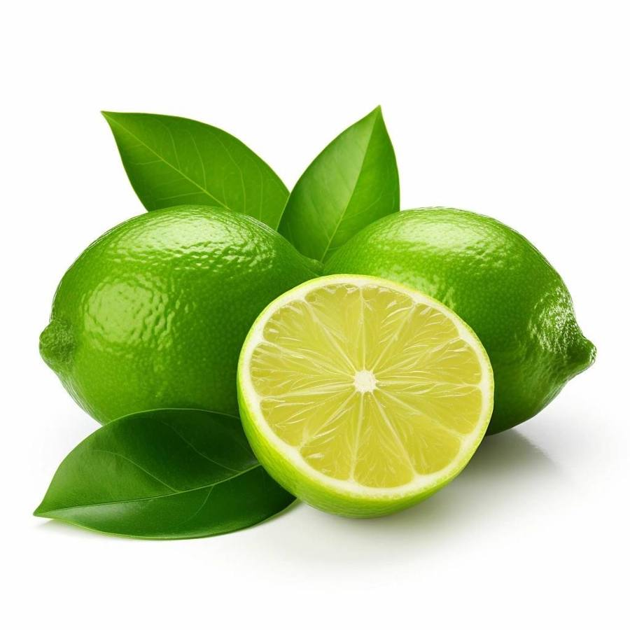

Le Comptoir Vert
Site one page pour une épicerie bio en vrac de Neuilly-sur-Marne : les horaires tout de suite, les familles de produits, la boutique et ses partenaires en circuit court.

Détails du projet
Le projet
Projet de formation : créer le site d'une épicerie bio en vrac à Neuilly-sur-Marne, selon la demande du propriétaire.
Sa demande : un site one page, simple et rapide à lire. Pas de fiches produits détaillées, seulement les familles de produits. Le visiteur doit voir les horaires tout de suite, découvrir la boutique et connaître ses partenaires en circuit court.
Mon rôle
- Analyse de la demande du propriétaire et veille sur un concurrent local
- Structure one page : horaires en haut, familles de produits, présentation de la boutique, partenaires en circuit court, contact
- Création du site sous WordPress
- Rédaction du cahier de recette et tests de chaque partie du site
Outils
- WordPress
- Cahier de recette
Ce que voulait le propriétaire
Quatre besoins clairs, traduits en une seule page.
- 1
Les horaires tout de suite
Dès l'arrivée sur le site, le client sait si la boutique est ouverte, sans chercher.
- 2
Les familles de produits
Pas de catalogue détaillé : les grandes familles du vrac pour donner une idée de l'offre.
- 3
Connaître la boutique
L'esprit du lieu, le bio et le vrac, pour donner envie de venir en magasin.
- 4
Les partenaires en circuit court
Mettre en avant les producteurs locaux qui fournissent l'épicerie.